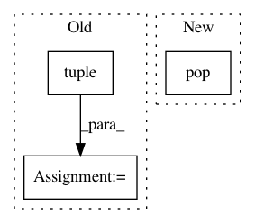

cfbaec60c77448e6249f912d4b4d4a8c079f2bcf,keras/engine/topology.py,Merge,get_output_shape_for,#Merge#Any#,1306
Before Change
shape1 = list(input_shapes[0])
shape2 = list(input_shapes[1])
dot_axes = [a - 1 for a in self.dot_axes]
tensordot_output = np.tensordot(np.zeros(tuple(shape1[1:])),
np.zeros(tuple(shape2[1:])),
axes=dot_axes)
if len(tensordot_output.shape) == 0:
shape = (1,)
else:
shape = tensordot_output.shape
After Change
shape1 = list(input_shapes[0])
shape2 = list(input_shapes[1])
shape1.pop(self.dot_axes[0])
shape2.pop(self.dot_axes[1])
shape2.pop(0)
output_shape = shape1 + shape2
if len(output_shape) == 1:
output_shape += [1]
In pattern: SUPERPATTERN
Frequency: 3
Non-data size: 3
Instances
Project Name: keras-team/keras
Commit Name: cfbaec60c77448e6249f912d4b4d4a8c079f2bcf
Time: 2016-07-16
Author: farizrahman4u@gmail.com
File Name: keras/engine/topology.py
Class Name: Merge
Method Name: get_output_shape_for
Project Name: NifTK/NiftyNet
Commit Name: f27fc2c9841b582b7280d00abca832b09954a7fc
Time: 2017-08-08
Author: wenqi.li@ucl.ac.uk
File Name: niftynet/io/image_window.py
Class Name:
Method Name: read_window_sizes
Project Name: pymc-devs/pymc3
Commit Name: 47e4d85129686501658d16528c86eca3e3987c9c
Time: 2017-09-02
Author: maxim.v.kochurov@gmail.com
File Name: pymc3/variational/opvi.py
Class Name: GroupApprox
Method Name: _check_user_params